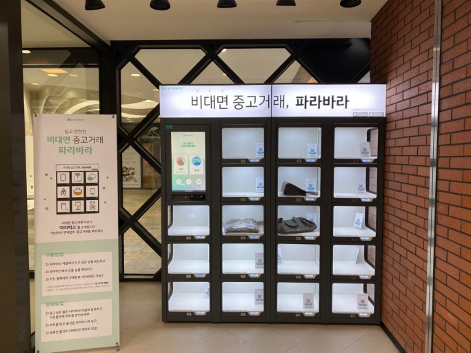

Trend Note: Update every Sunday
Last Written 2021-06-13
중고거래 자판기

MZ 세대를 중심으로 실용적인 사고, 경험 가치의 중시, 윤리적 소비라는 흐름이 맞물리면서 중고거래는 활성화됐다.
하지만, 아직 사람들이 생각하는 중고거래에는 '사기'의 무서움을 가지고 있다.또한, 사기를 방지하기 위해 직접 보고 사는 직거래 방식을
선호하긴 하지만, 시간과 장소를 맞춰야 하는 불편함과 범죄, 코로나 감염에 대한 불안감이 있다.중고거래에 대한 부정적인 인식이
'중고 제품 자체’ 보다 '거래 방식'에서 기인한다는 점이다.
이러한 신뢰도를 회복하기 위해 비대면과 중고거래의 장점을 융합한
새로운 모델이 등장하게 되었다. 자판기를 통해 중고명품을 파는것이다.판매자는 쉽게 상품을 등록할 수 있으며,
구매자는 마음에 드는 물건을 발견하면 바로 구매할 수 있다. 중고거래에 대한 불안감을 줄여준 것이다.
현재 자판기 판매 대상은 중고명품 자판기에 불과하지만, 값이 싼 중고 물품으로까지 확대되면 좋을 것 같다고 생각했다.
변화하는 정수기

홈카페와 홈술족의 증가로 정수기도 취향을 공략하여 나오게 됐다. 이제 집에서도 취향에 따라 원하는 주류를 마실수 있는것이다.
기존의 커피머신과는 달리 물을 직접 채워야하는 번거러움도 없고 더 깊은 맛과 향을 이끌어낼수 있다.
또한 따로 커피머신을 사지 않아 공간 효율도 있고, 정수기 기능인 깨끗한 물을 활용해 위생적이다.
월 렌털료 5만원대로 저렴한 편이 아님에도 주목받고 있다.
소비자의 취향에 맞는 정수와 음료를 한 공간에서 이끌어낼수 있다는것에 소비자들에게 큰 인기를 받을 수 있다고 생각한다.
소비자의 취향을 알기 위해서는 항상 소비자와 가까이 위치하고 잘 파악하는 것이 중요하다고 생각했다. 항상 비즈니스트렌드를 분석하여
소비자들이 무엇을 원하는지 수시로 파악할 수 있어야 한다고 느꼈다.
배송 로봇

현대자동차,기아와 배달 플랫폼인 우아한형제들이 배송 물류 로봇 연구개발을 위해 협력을 추친했다.
협약을 통해 무인 배송 서비스를 위한 로보틱 모빌리티를 개발하고, 로봇을 활용한 스마트 물류 사업 고도화를 목표로 했다.
이들은 다양한 구조의 건물 이동에 최적화괸 로봇, 결제 서비스 제공이 가능한 로봇, 아파트와 같은 다층 수도 건물에서 층간 이골 가능한
로봇을 개발하기로 했다. 인류를 위한 모빌리티 서비스 구축에 기여할 계획이라고 밝혔다.
배송 물류 로봇 연구개발이 성공적으로 이루어진다면 모빌리티 사회로 급속도로 변화할것이라고 생각한다.
또한 성공하기 위해서는 소비자의 인식을 변화시킬 수 있어야 하며 로봇에 대한 신뢰가 바탕으로 이루어져야 한다고 생각한다.
현대모비스 엠비션 'POP'

현대모비스는 자동차의 현재와 미래가 담긴 모빌리티 콘셉트 자동차를 공개하였다.
이미 확보했거나 개발 중인 기술에 창의적인 미래 기술 비전을 합친 비전이다.
스마트폰과 운전대를 결합하는 '엠비션 POP' 가술을 포함해 5년안에 시장에 제공되는 것을 목표로 하고 있다.
여기서 가장 핵심은 '포빌리티'이다. 폰과 모빌리티의 합성어로, 운전대에 장착된 스마트폰이 자동차 콕핏이 되는 것이다.
또한, 각 바퀴를 독립적으로 제어하도록 만들어 차축등과 같이 구동력을 전달하는 부품들과 구동 모터가 필요치 않아 차량 공간 활용을 극대화
할 수 있다.
글로벌 자동차 업계는 지속적으로 '운전'의 개념이 사라지는 완전 자율 주행 시대에 모빌리티가 이동 수단으로서 탑승자에게
어떤 효용성을 제공할 수 있는지 고민중이다.
엠비전X를 통해 탑승자가 서로 다른 콘텐츠를 즐길 수 있으며, 직접 접촉하지 않아도 제스처로 모든 기능을 제어할 수 있다는 장점이 있다.
천재승 현대모비스 기초선행랩장 상무는 "현대모비스가 제시한 새 모빌리티 플랫폼에는 서로의 마움을 나누고 일상의 즐거움을 느낄 수 있는 기술적 탐험 정신이 담겨있다."고 전했다.
현대모비스가 공개한 포빌리티가 시장에 나온다면, 굉장히 큰 변화가 일어날 것이라고 생각한다.
실현이 가능해진다면, 직업과 트렌드의 변화가 일어나 사회 전반적으로 큰 영향을 끼치기를 기대한다.
하지만, 실현되기에 앞서 고객들에게 완전자율주행자동차에 대한 신뢰감을 확보하는 것이 해결과제라고 생각한다